Modernisation of HCL BigFix's SCM that cut checklist creation time by ~40%
BigFix is used by over 2,500 organisations worldwide to manage more than 165 million devices, and supports complex enterprise IT operations, including patch management, software distribution and security compliance.

The business context
BigFix was undergoing a major transformation, moving its long-standing console application to a modern web platform. Security Configuration Management (SCM) is one of its specialised capabilities, helping organisations continuously monitor configurations and remediate security drift using industry-standard benchmarks such as CIS, DISA STIG and PCI-DSS.
As the lead designer for SCM's migration, my responsibility was to preserve the capabilities expert users depended on while modernising how they interacted with the product. This meant understanding the complexity of the existing system, identifying opportunities for UX improvements and working within the technical constraints of the larger BigFix platform.
The Challenge
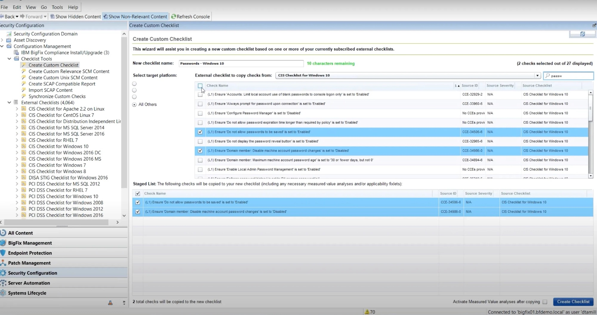
The challenge was to preserve the capabilities users depended on, while rethinking an experience that had historically been organised around the system rather than their work.
Outcomes
~40% reduction in checklist creation time
During internal walkthroughs with users, I observed checklist creation time decrease from approximately 20 minutes in the previous workflow to under 12 minutes in the redesigned experience.
2 additional modules adopted the approach
The stepwise, confidence-building approach was subsequently adopted by Patch and Software Distribution, contributing to consistency across BigFix.
Accessibility improvements
The redesign introduced clearer information hierarchy, accessible visualisation patterns and improved system feedback, with WCAG AA requirements considered throughout the design.
Business constraint
Access to end users was limited during the early discovery phase, so I combined the system audit and existing support evidence with walkthroughs and design reviews throughout the project. These involved 3 proxy users, 4 real users and 7 technical advisors to users.
Iterating within technical constraints
Throughout the project, I used prototype walkthroughs and design reviews to evaluate the proposed interactions and refine the experience. Feedback from users, proxy users and technical advisors helped identify unclear steps, missing guidance and edge cases that needed further consideration. Some design decisions also depended on what the existing backend could support. I worked with engineering to understand these limitations and adjust the interactions accordingly. Where an operation could fail or require additional approval, I focused on communicating the system state and the next available action.
The iterative approach helped balance the need for a modern, task-led experience with the reliability and compatibility requirements of the existing BigFix platform.
I started by understanding the complexity before redesigning it
The first thing I needed to understand was how SCM worked, who used it and what they were trying to achieve.
SCM supports several specialised responsibilities.
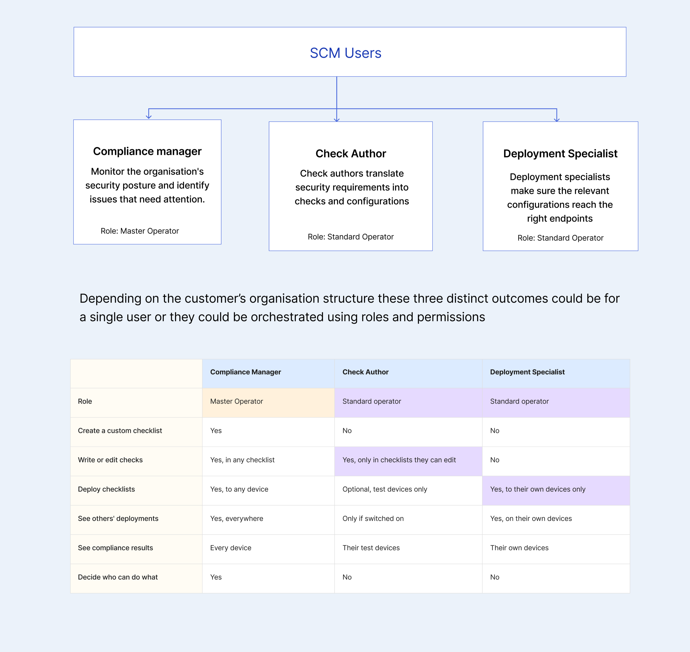
So a master operator could be a compliance manager, check author and a deployment specialist in some smaller organisation, and in larger organisations these could be spread across multiple roles, like a standard operator could be both Check author and deployment specialist or only either of the two.
The experience a user had within SCM depended on their assigned roles and permissions, which determined what they could access, see and do within the application.
This meant SCM needed a modular, permission-driven interface, where individual blocks of information and functionality would appear based on what each user was authorised to access. This would allow the experience to adapt to different users while keeping the information and actions relevant to their responsibilities.
Mapping how work happened in SCM
I started by mapping the SCM lifecycle, from selecting security benchmarks and creating checklists to customising checks, deploying configurations, monitoring compliance and keeping content current. This helped me understand how the different responsibilities connected and where work moved between users or applications.
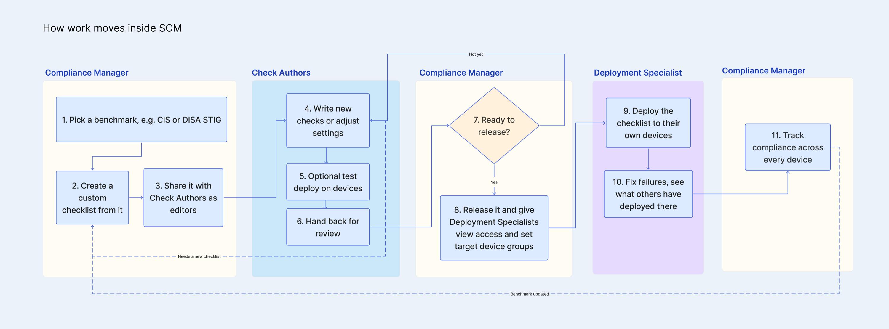
I then carried out an audit and turned findings into design priorities
I carried out a system audit of the existing console, reviewed support data and community discussions, and worked with engineering and product stakeholders to understand the technical boundaries of the migration. The audit revealed recurring issues across navigation, permissions, fragmented workflows, content discovery, checklist management and system feedback.
These findings highlighted several UX opportunities, although some involved technical complexities and dependencies on other BigFix capabilities.
Problems I could address through UX
Changes to navigation, interaction design, language or information hierarchy could improve the experience.
Technical limitations I could make clearer or safer
Some findings involved underlying system behaviour, where UX could help users understand the situation and avoid mistakes.
Problems that had to be parked
A few findings depended on backend changes, capabilities owned by other applications or work that fell outside the technical scope of the migration.
This prioritisation helped me establish an understanding of where design could have the greatest impact within the migration and they became the main design challenges I focused on.
Rethinking where users should start
As SCM moved to the web, I started exploring how the entry experience could better reflect what users were trying to accomplish.
BigFix already had a Home page where users could see and navigate to the applications available to them. At the same time, I was designing an SCM landing page that would give compliance managers an overview of their environment.
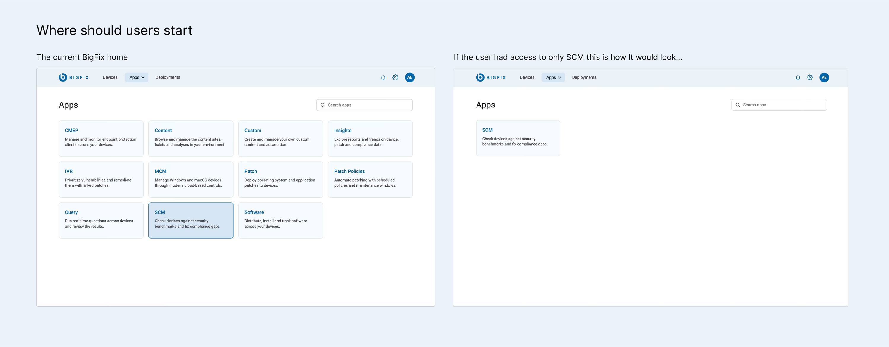
This raised an interesting question.
What happens when someone has access to only SCM? Sending them through a broader BigFix Home page would add an extra step before they could begin their work.
The approach that I took was for someone working only with SCM, the SCM landing page would effectively become their Home page. For someone managing multiple BigFix capabilities, Home would remain the common entry point, allowing them to navigate into SCM or other applications as needed. Within SCM, roles and permissions would continue to determine which capabilities and actions were available, and how their home page would look like.
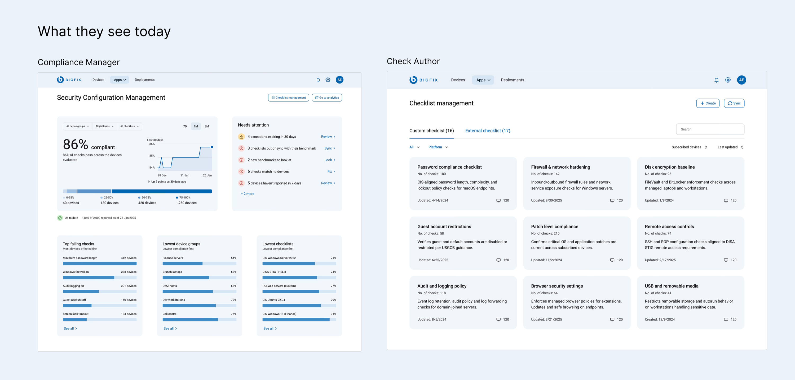
What would Scott, a compliance manager need to make decisions he can trust and what was technically feasible today?
With the entry experience defined, I moved into understanding what a compliance manager needed to see after arriving in SCM. I broke down their goals into three questions.
How is the environment doing, and how current is the data?
Compliance managers needed an overview of compliance performance, trends and when the information was last successfully updated.
What needs attention?
Out-of-sync checklists, new benchmarks, failed imports and exceptions affected by changes to checks could all require decisions or follow-up actions.
Where is compliance weakest?
Managers also needed to find the lowest-performing checklists, device groups and failing checks so they could investigate the areas requiring attention.
I worked with my PM, lead engineer and platform team to understand what reporting data was available, what could realistically be supported within the migration scope, and how I could use it to give compliance managers a meaningful overview of their environment.
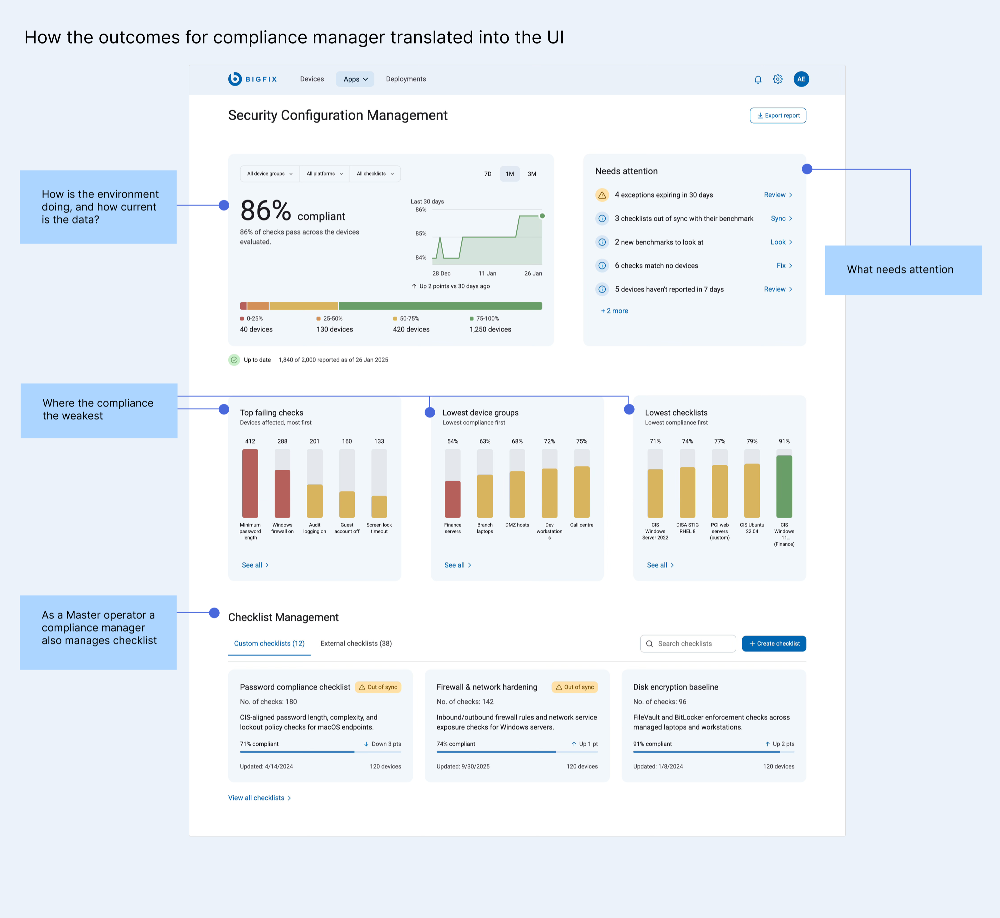
Making compliance information easier to compare
The earlier vertical bar charts made long labels difficult to accommodate within the available space. I changed these to compact horizontal rankings, giving labels more room and keeping the numerical values visible alongside each bar. This made it easier to scan the list and compare the weakest-performing areas.
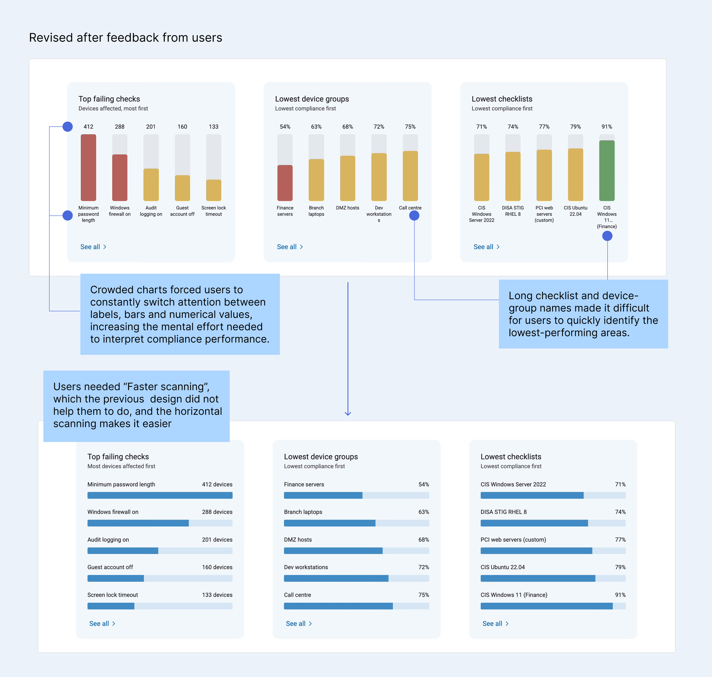
To improve the accessibility of data visualisations, BigFix moved to monochromatic colour scheme, I applied it in my designs as well.
Working around the reporting limitation
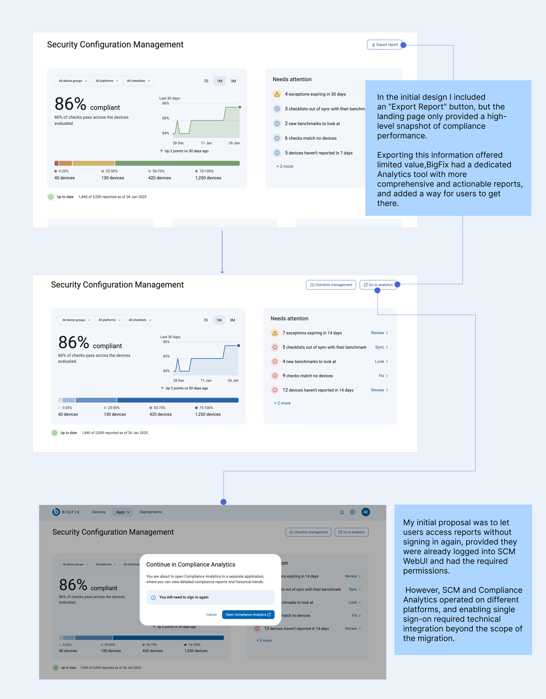
Users already relied on a separate web-based Analytics tool for detailed compliance reporting. Integrating that functionality into SCM depended on capabilities outside the migration scope.
The trade-off was an additional login step. To make this transition predictable, I introduced a confirmation modal explaining that users would be leaving SCM, opening a separate application and needing to sign in again.
Simplifying checklist creation without removing expert control
The next major challenge involved one of SCM's core workflows, creating a custom checklist.
Custom checklists allow organisations to adapt security benchmarks to their own requirements. Users need to select relevant content, customise checks and parameter values, decide which devices the checklist applies to and eventually deploy it. The console supported these capabilities, but the journey was fragmented across different parts of the application. From the audit and workflow mapping, I could see an opportunity to connect the steps and make the decisions easier to follow.
Translates security-policy requirements into configurations
Scott works with the security team to translate security-policy requirements into configurations that can be monitored and enforced across endpoints.
Does checklist management
He needs to create custom checklists, modify parameters, add organisation-specific checks and keep the content updated when external benchmarks change.
Could be a compliance manager or a Master Operator responsible only for checklist creation
Scott represents someone with permission to create and manage checklists.
Understanding where the effort came from
Creating a checklist involved moving between selecting source content, finding relevant checks, modifying parameters and reviewing what would eventually apply to different devices. Users needed to inspect a large amount of technical content while keeping track of decisions made across the workflow.
What if we can automate the process of checklist creation based on just a few criteria selections!
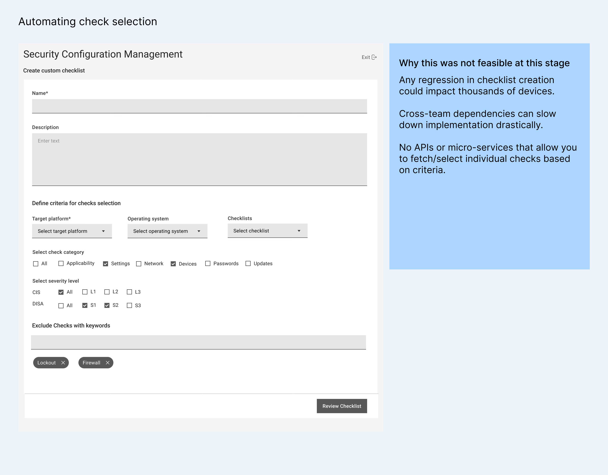
The team liked the idea, but after reviewing it with engineering, the team found too many technical uncertainties and dependencies to move forward with it confidently.
I also considered a conservative approach of keeping checklist management closer to the BigFix Console, but it did not address the cognitive load issue.
A step by step approach reduces learning curve for new users without challenging the mental model of the old console users
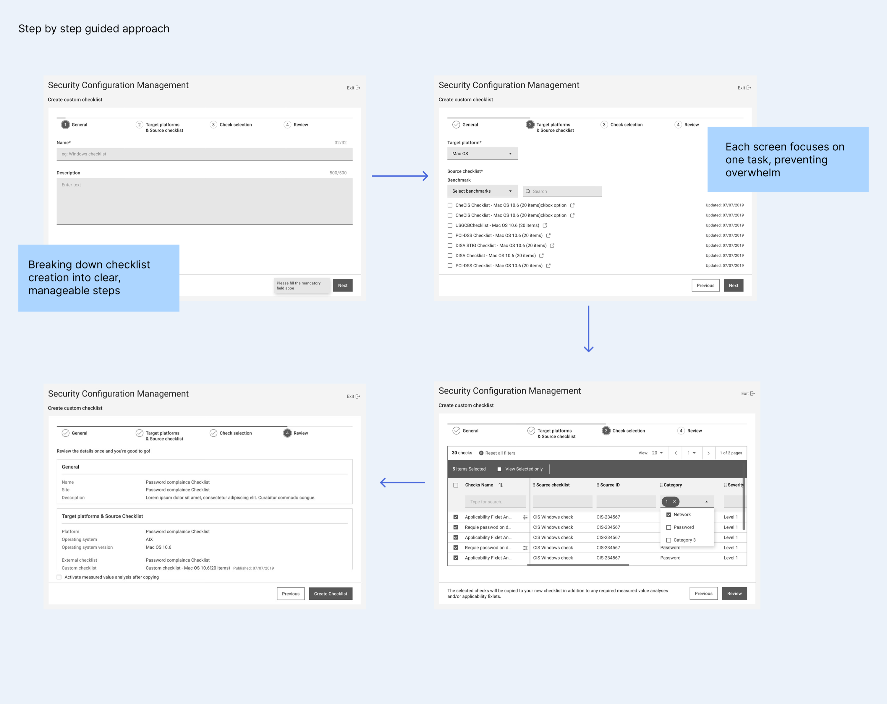
This was the shipped version for SCM create checklist flow.
Design trade-off
I prioritised clarity and guidance over fewer clicks. The guided flow introduced more screens and required users to move between steps, which initially raised concerns among experienced users.
During usability testing, new users found the guided approach easier to follow because each screen focused on a specific decision. Experienced users, however, felt that the process had simply moved from one page to multiple pages and questioned whether it would take longer.
The interesting finding was that more screens didn’t mean more time. Testing the alpha release with proxy users we recorded that the checklist creation time dropped from approximately 20 minutes to under 12 minutes. Breaking the process into focused steps helped users move through decisions more efficiently, despite the additional navigation.
One thing that actually made the process faster for the users were the availability of the check detail within the same screen on clicking of the check-name and adding the parameters value right on the table. In the initial version parameterised check’s value had to be added after checklist creation, with this flow they could do it right away.
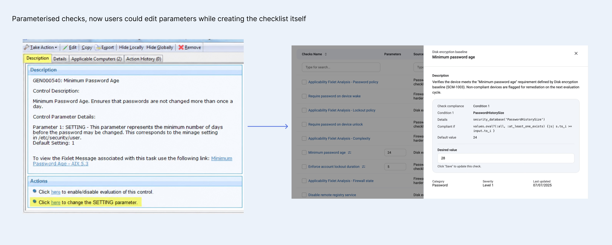
Iterating with feedback
During usability sessions, I noticed a consistent pattern in how experienced users navigated the original table under the platform and sources tab. They started by selecting a platform, then chose a benchmark, and finally used keywords to narrow down the results.
New users struggled with the interface. The amount of information presented at once felt overwhelming, and I noticed them pausing and hesitating as they scanned the table. Some described it as “looking too dense.”
This led me to a key design decision structure the selection process around the sequence users were already following. I broke down the table into a step-by-step flow that followed their natural decision-making process, helping new users understand where to start while allowing experienced users to move through familiar steps efficiently.
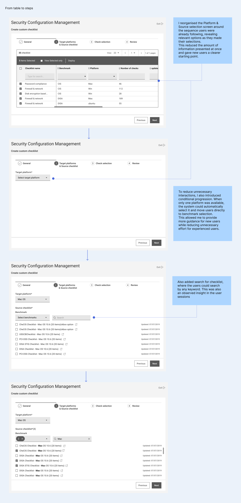
Making large amounts of content manageable
I used search, sorting and filtering to help users find relevant content. Clear check properties helped distinguish parameterisable checks from user-defined checks and made the content easier to inspect before changing it.
This was particularly useful for large checklists, where users needed to compare technical information and make several decisions before proceeding.
Scott could create a checklist in the web but he still needed the console to define which ‘Check Authors’ can see it…
I wanted to make sure users knew exactly where to go and what to do next. So I added clear, step-by-step instructions within the Permissions tab, explaining how to complete the task in the Console.
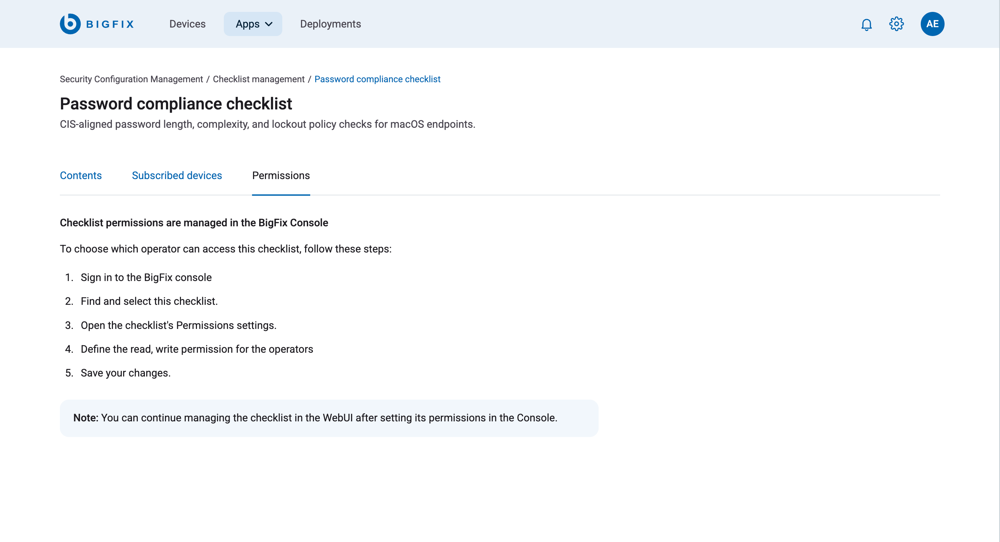
Designing a modular experience around roles and permissions
One of the challenges with SCM was accommodating users with different combinations of roles, permissions and responsibilities.
For example, a Master Operator (MO) might be responsible for creating and managing checklists without having access to compliance reporting. In that case, showing them a compliance dashboard as their Home page would serve little purpose.
I wanted the experience to adapt to what each user was authorised to do, while maintaining a consistent structure across SCM.
Separating checklist management into its own experience
I moved Checklist Management into a dedicated page, allowing it to function independently of the compliance overview.
This meant that for a Master Operator without reporting access, Checklist Management could become their Home page, giving them direct access to the work they were responsible for. For compliance managers with reporting permissions, the landing page could focus on monitoring compliance and identifying areas that needed attention.
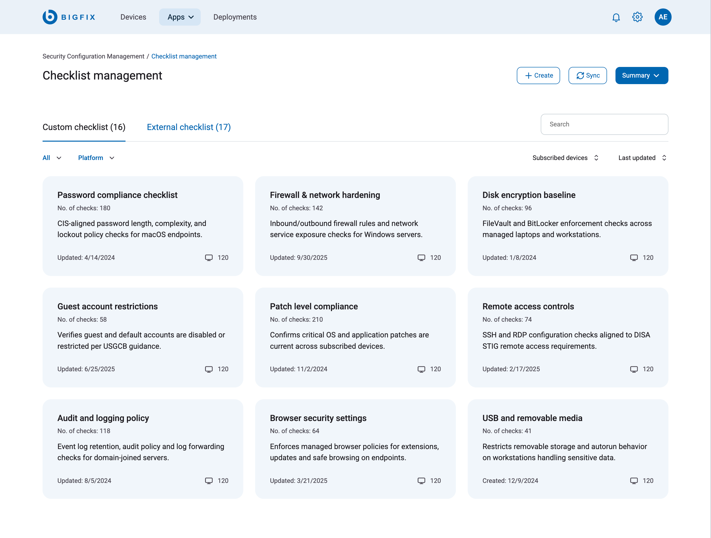
Consolidating creation actions into one place
SCM had several creation actions, and the options available depended on the user’s permissions. Having separate buttons for each action would make the interface increasingly cluttered as more capabilities were introduced. I grouped these actions under a single Create menu, where users could access the creation options available to them. This gave the interface a consistent entry point for creation tasks and made it easier to accommodate additional actions for different roles as the product evolved.
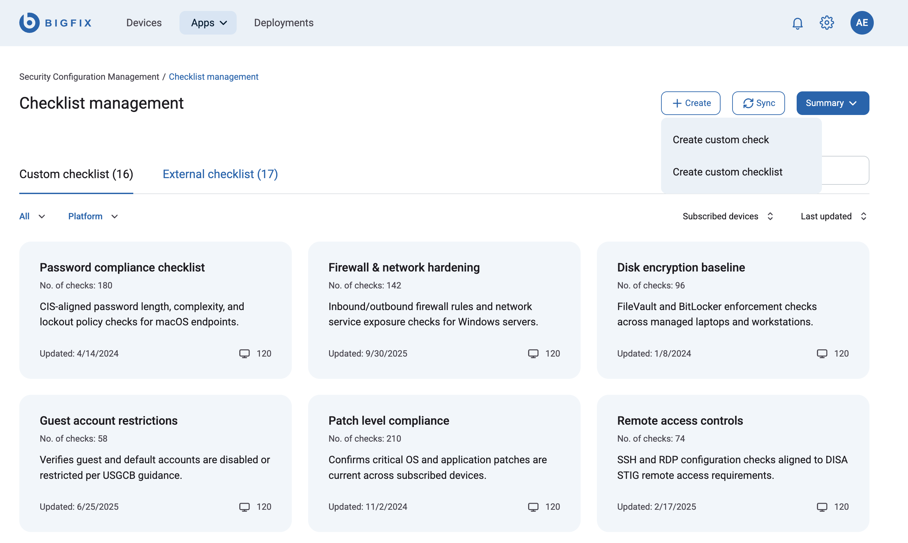
Organising checklist functionality into permission-aware tabs
Within the Checklist Management page, different operators needed access to different capabilities. I organised the functionality into tabs, allowing the interface to display only those sections relevant to the user’s assigned permissions. This helped keep related tasks together while reducing the number of unavailable or irrelevant options users had to navigate.
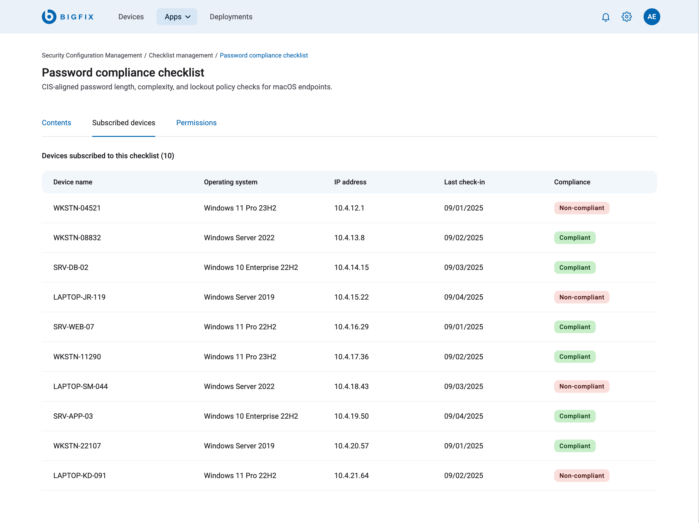
How this helped me and the team
For me, the modular approach made it easier to design for different permission combinations without creating separate experiences for every user type.
For the engineering team, it provided a clearer structure for implementing permission-based visibility and managing individual components. This also made it easier to accommodate new roles, actions and capabilities without having to rework the entire interface.
My takeaways
Meaningful impact can be made through micro-improvements
Small changes, like improving terminology, feedback messages, and flow structure compounds and brings in clarity and improves efficiency.
Solving for complexity is challenging but satisfying
Simplifying a highly technical domain and turning complex workflows into clear, guided experiences was genuinely satisfying. Every design decision had a direct impact on reducing errors and increasing user confidence in a security-critical environment.